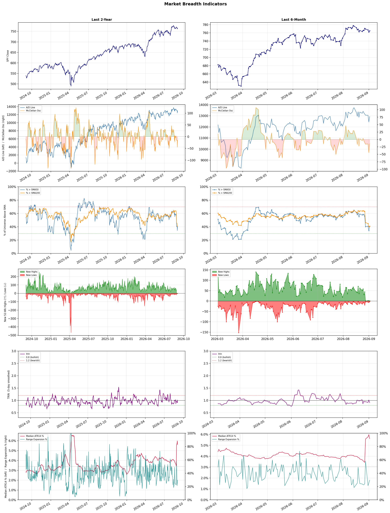

A daily market breadth and sector rotation report for active investors
| Item | Read |
|---|---|
| Regime | Defensive |
| Risk posture | Defensive |
| Universe | 1,330 stocks tracked · 1 new 52-week highs · 30 active swing setups |
| Breadth | only 40.8% of tracked stocks are above SMA50, new lows exceed new highs (2 vs 1), McClellan oscillator (breadth momentum) is negative at -14.4 |
| Leadership | Diagnostics & Research, Oil & Gas Refining & Marketing, and Health Information Services |
| Weakest groups | Solar, Footwear & Accessories, and Electrical Equipment & Parts |
Use this report to prioritize research and chart review; validate entries, stops, liquidity, earnings, and risk before acting.
| Item | Read |
|---|---|
| Primary read | Defensive regime with Defensive risk posture. |
| Research queue | TWST, WGS, PSNL, NTRA, OPK |
| Leadership focus | Diagnostics & Research, Oil & Gas Refining & Marketing, and Health Information Services |
| Caution list | Solar, Footwear & Accessories, and Electrical Equipment & Parts |
| Review prompt | Check extension risk, chart location, fundamentals, valuation, and earnings before using any research row. |
| Item | Read |
|---|---|
| Primary read | 4 active risk warnings; use screen output as watchlist input only. |
| Bullish screens | CVX, PGR, WTI, AU, EGO |
| Bearish screens | NIO |
| Alerts / levels | Automated trigger, stop, ATR, liquidity, reward/risk, and event-risk levels are pending future enrichment. |
| Review prompt | Open the linked chart, define trigger and invalidation, then check liquidity and event risk independently. |
Risk Posture: Defensive — screen backdrop favors caution; require independent risk review before new exposure
Metric context: McClellan below -50 = elevated selling pressure; below -100 = washout territory. Range Expansion = share of stocks with daily range above their 20-day average. Signal Density = share of tracked names appearing in signal screens.
| Breadth Date | % > SMA50 | % > SMA200 | New Highs | New Lows | McClellan | Median Range | Avg Range | Median ATR14 | Range Expansion | Signal Density |
|---|---|---|---|---|---|---|---|---|---|---|
| 2026-09-02 | 40.8% | 40.8% | 1 | 2 | -14.4 | 3.1% | 3.6% | 5.6% | 29.6% | 6.3% |

Prior comparison date: September 1, 2026
| Metric | Prior | Current | Change |
|---|---|---|---|
| Regime | Defensive | Defensive | unchanged |
| Risk Posture | Defensive | Defensive | unchanged |
| % > SMA50 | 34.3% | 40.8% | +6.5 pts |
| % > SMA200 | 40.2% | 40.8% | +0.6 pts |
| New Highs | 1 | 1 | +0 |
| New Lows | 7 | 2 | +5 |
Top-10 industries entering: Copper. Top-10 industries leaving: Financial Data & Stock Exchanges. New multi-signal long setups: PGR. New multi-signal short setups: NIO.
| Status | Tickers | Read |
|---|---|---|
| Added | AMGN, AVTX, EGO, JNJ, LFST, MDB, NIO, OPK | New technical screen matches vs prior report. |
| Removed | ARIS, BLMN, BTG, CCL, CME, DUOL, EOSE, EWTX | No longer present in today's technical screen matches. |
| Still Active | AU, CF, CTVA, CVX, DINO, DXYZ, FMC, IBRX | Appeared in both current and prior reports. |
| Promoted | none | Model Screen Score improved by at least 15 points. |
| Downgraded | MRNA, WTI | Model Screen Score declined by at least 15 points. |
| Direction | Industry | ETF | Prior Rank | Current Rank | Days | Rank Change |
|---|---|---|---|---|---|---|
| Rose | Gold | GDX | 84 | 6 | 42 | +78 |
| Rose | Agricultural Inputs | N/A | 77 | 7 | 14 | +70 |
| Rose | Oil & Gas E&P | XOP | 72 | 5 | 28 | +67 |
| Rose | Copper | COPX | 71 | 10 | 35 | +61 |
| Rose | Uranium | URA | 88 | 31 | 42 | +57 |
Bull: Gold's rising relative strength can be attributed to increasing concerns over economic uncertainty and inflation, as highlighted by the "debasement trade" mentioned in the headlines. With gold prices nearing $4,270 and mining stocks like GDX still 22% below their peak, investors are likely seeking safe-haven assets to hedge against potential market volatility and currency devaluation. Additionally, the focus on gold investments in retirement accounts underscores a growing recognition of gold's role in preserving wealth during turbulent economic times.
Bear: While the rising relative strength of gold may seem promising, it is essential to consider that the current price levels are heavily influenced by speculative trading rather than fundamental demand, as evidenced by the significant underperformance of mining stocks like GDX compared to gold prices. Furthermore, the recent headlines highlight increasing volatility and risks within the sector, such as exploration challenges and funding needs, which could undermine investor confidence and lead to a further decline in mining stocks. Consequently, the notion of gold as a safe-haven asset may be overstated, especially if economic recovery takes hold and interest rates rise, diminishing gold's appeal.
Verdict: The gold industry's rising trend is primarily driven by heightened economic uncertainty and inflation concerns, prompting investors to seek safe-haven assets to protect their wealth. However, the key risk lies in the potential for speculative trading to overshadow fundamental demand, particularly if economic recovery gains traction and interest rates rise, which could diminish gold's attractiveness as an investment. Investors should remain vigilant about market volatility and the performance of mining stocks, as these factors could significantly impact gold prices moving forward.
Sources: Yahoo Finance, Google News
Bull: The Agricultural Inputs sector is likely experiencing rising relative strength due to a combination of undervaluation in the broader basic materials sector, as highlighted by Morningstar, and a positive momentum in agricultural stocks, evidenced by Corteva's recent share rally. Additionally, the delay in Ferbis offering, which positively impacted Hektas stock, suggests a favorable trading environment that may be boosting investor confidence in agricultural inputs. This confluence of factors indicates a robust outlook for the sector as it capitalizes on both market corrections and growing demand.
Bear: While the bull thesis highlights potential undervaluation and positive momentum in the agricultural inputs sector, it's essential to consider the broader economic landscape and potential headwinds. Rising input costs, including energy and transportation, could significantly erode margins for agricultural companies, counteracting any gains from increased demand. Additionally, the recent drop in Mosaic's stock and the overall volatility in commodity prices suggest that investor confidence may be overstated, as these fluctuations can lead to uncertainty and risk aversion in the sector.
Verdict: The Agricultural Inputs sector is likely experiencing rising relative strength due to a combination of perceived undervaluation and positive momentum in key stocks, which is attracting investor interest amid growing demand. However, key risks remain, particularly from rising input costs and volatility in commodity prices, which could erode margins and dampen overall sector performance. Investors should monitor these economic pressures closely while considering positions in agricultural inputs.
Sources: Google News
Bull: The rising relative strength of the Oil & Gas E&P sector can be attributed to a resurgence in oil prices, with recent headlines indicating that oil has topped $100 for the first time since May, which typically boosts profitability for exploration and production companies. Additionally, the strong performance of oil stocks amidst broader market declines, as noted in the headlines, suggests that investors are increasingly seeking refuge in the sector, further driving demand for E&P stocks. This bullish sentiment is reinforced by positive outlooks from analysts, as indicated by the Morningstar article highlighting the best energy stocks to buy now.
Bear: While the rising relative strength of the Oil & Gas E&P sector might seem promising, it is crucial to consider the volatility inherent in oil prices, which can be heavily influenced by geopolitical tensions, supply chain disruptions, and shifts in global demand. The recent spike to over $100 per barrel may be temporary, and any significant downturn in prices could severely impact profitability and investor sentiment. Furthermore, the broader market's decline could indicate underlying economic weaknesses that may eventually catch up with the E&P sector, leading to a potential correction in stock prices despite current optimism.
Verdict: The recent rise in the Oil & Gas E&P sector is primarily driven by a resurgence in oil prices, surpassing $100 per barrel, which enhances profitability for exploration and production companies and attracts investor interest amidst broader market declines. However, investors should remain cautious of the inherent volatility in oil prices, as geopolitical tensions and economic weaknesses could lead to a significant downturn, jeopardizing the sector's current momentum and profitability. It is advisable to monitor geopolitical developments and global demand trends closely before making investment decisions in this sector.
Sources: Yahoo Finance, Google News
Bull: Copper is experiencing rising relative strength primarily due to its critical role in the electrification and AI boom, as highlighted by headlines discussing COPX as a key player in the "electrification squeeze" and the "pick-and-shovel AI trade." Additionally, the significant rally in copper-related investments, with COPX outperforming other sectors and a notable 115% increase over the past year, underscores strong demand driven by infrastructure development and renewable energy initiatives. This momentum is further supported by the broader market's shift towards copper as a vital commodity, akin to crude oil, amidst increasing industrial and technological applications.
Bear: While the bullish narrative around COPX highlights copper's role in electrification and AI, it overlooks several critical headwinds that could undermine its momentum. The recent rally may be driven more by speculative trading and short-term market sentiment rather than sustainable demand fundamentals, especially as global economic uncertainties loom, including potential recessions and tightening monetary policies. Additionally, the high volatility of copper prices, influenced by geopolitical tensions and fluctuating supply chains, could lead to significant corrections that would adversely affect the ETF's performance.
Verdict: Copper's recent rise is fundamentally driven by its essential role in the electrification of industries and the AI boom, with strong demand stemming from infrastructure and renewable energy projects. However, investors should remain cautious of potential headwinds, including speculative trading dynamics and the risk of economic downturns, which could lead to price volatility and corrections in the copper market.
Sources: Yahoo Finance, Google News
Bull: The rising relative strength of uranium stocks can be attributed to a renewed risk appetite among investors, as evidenced by the rebound in nuclear stocks following an oversold bounce, particularly with Uranium Energy jumping 6% and other uranium plays surging. Additionally, the increasing interest in nuclear power as a stable energy source, highlighted by the positive market reaction to certain companies like NuScale Power, suggests a growing recognition of uranium's role in the energy transition amidst broader market volatility. This shift is further supported by the separation of the nuclear power trade from the wider sector, indicating a specific bullish sentiment towards uranium investments.
Bear: While the recent rebound in uranium stocks may suggest a renewed risk appetite, it is crucial to recognize that this volatility is indicative of underlying instability within the sector, as evidenced by significant drops in key players like NuScale Power and Oklo. Furthermore, the reliance on nuclear energy as a stable energy source faces substantial headwinds, including regulatory uncertainties, public perception challenges, and competition from rapidly advancing renewable energy technologies, which could undermine the long-term growth prospects of uranium investments.
Verdict: The recent rise in uranium stocks is primarily driven by a renewed investor appetite for nuclear energy as a stable and essential component of the energy transition, highlighted by positive market reactions to companies like Uranium Energy and NuScale Power. However, investors should remain cautious of the significant risks posed by regulatory uncertainties, public perception challenges, and competition from renewable energy technologies, which could hinder the long-term viability of uranium investments.
Sources: Yahoo Finance, Google News
| Direction | Industry | ETF | Prior Rank | Current Rank | Days | Rank Change |
|---|---|---|---|---|---|---|
| Fell | Airlines | N/A | 4 | 84 | 28 | -80 |
| Fell | Integrated Freight & Logistics | N/A | 16 | 75 | 42 | -59 |
| Fell | REIT - Retail | N/A | 8 | 63 | 35 | -55 |
| Fell | Building Products & Equipment | XHB | 28 | 83 | 28 | -55 |
| Fell | Footwear & Accessories | N/A | 33 | 87 | 35 | -54 |
Bear: While the bull analyst attributes the decline in airline stocks to sector-wide profit warnings and rising operational challenges, it's crucial to consider that these issues are symptomatic of deeper, systemic problems within the industry. The ongoing volatility in fuel prices, labor shortages, and increasing regulatory pressures could exacerbate operational inefficiencies and erode margins, leading to a prolonged period of underperformance for airline stocks. Additionally, with economic uncertainties looming, consumer demand may not rebound as anticipated, further straining profitability and investor confidence in the sector.
Bull: The recent decline in relative strength for the airline industry can be attributed to a combination of sector-wide profit warnings and rising operational challenges, as highlighted in the headlines. Specifically, Delta's profit warning and Southwest Airlines' significant 14% drop in stock price signal heightened concerns over profitability amid increasing costs and potential demand fluctuations. These factors, alongside broader economic uncertainties, have led investors to reassess the outlook for airline stocks, creating a bearish sentiment in the short term.
Verdict: The recent decline in the airline industry is primarily driven by rising operational challenges, including profit warnings from major players like Delta and Southwest, which have heightened investor concerns over profitability amid increasing costs. A key risk from the bear case is the potential for ongoing volatility in fuel prices and labor shortages, which could further erode margins and hinder recovery in consumer demand, suggesting that investors should approach airline stocks with caution and consider defensive positions until clearer signals of stability emerge.
Sources: Google News
Bear: While the bull analyst points to individual company performances as a sign of resilience, the broader decline in relative strength for the Integrated Freight & Logistics sector suggests systemic issues that cannot be overlooked. Factors such as rising operational costs, persistent inflation, and potential supply chain disruptions are likely to weigh heavily on profitability and margins, undermining any short-term gains from specific companies. Furthermore, the mixed signals from major players like FedEx indicate that even strong earnings may not translate into sustained investor confidence, as the sector faces increasing competition and evolving consumer preferences.
Bull: The Integrated Freight & Logistics sector is likely experiencing a decline in relative strength due to broader economic uncertainties and shifting consumer demand, as indicated by headlines discussing FedEx's mixed performance and the debate over the impact of tariffs and freight dynamics. Additionally, while companies like C.H. Robinson are showing growth, the overall sentiment may be dampened by concerns about inflation and its effects on consumer goods versus industrials, as highlighted in the comparison between Frontline and ZIM Integrated Shipping Services. This suggests that while individual companies may perform well, the sector as a whole is grappling with macroeconomic pressures that are affecting investor confidence.
Verdict: The Integrated Freight & Logistics sector is likely declining due to persistent macroeconomic pressures, including rising operational costs and inflation, which are eroding profitability across the industry despite some individual company successes. The key risk highlighted by the bear case is that systemic issues such as supply chain disruptions and evolving consumer preferences may overshadow short-term gains, leading to sustained investor caution and volatility in the sector. Investors should closely monitor economic indicators and operational efficiencies to gauge the sector's resilience moving forward.
Sources: Google News
Bear: The bullish thesis overlooks the fundamental challenges facing the retail REIT sector, including the persistent shift towards e-commerce, which continues to erode foot traffic and demand for physical retail spaces. Additionally, while some retail REITs may claim resilient demand, the overall industry is experiencing declining occupancy rates and rising vacancy levels, which could lead to increased pressure on rental income and property valuations. This suggests that the sector's struggles are not merely cyclical but indicative of a more profound, structural shift in consumer behavior and retail dynamics.
Bull: The relative weakness in the Retail REIT sector can be attributed to heightened competition and investor interest shifting towards more resilient sectors, as highlighted by articles focusing on industrial REITs and the broader REIT market. Additionally, the mention of "resilient demand and limited supply" for certain retail REITs suggests that while some companies may thrive, the overall sector is grappling with challenges that could be dampening investor sentiment, as indicated by the recent price pullback of Brixmor Property Group (BRX).
Verdict: The retail REIT sector is facing fundamental challenges primarily due to the ongoing shift towards e-commerce, which is reducing foot traffic and demand for physical retail spaces, leading to declining occupancy rates and rising vacancies. While some retail REITs may experience pockets of resilience, the overall trend suggests a structural shift in consumer behavior that could continue to pressure rental income and property valuations. Investors should be cautious of these dynamics, as the bear case highlights significant risks to the sector's long-term stability and growth potential.
Sources: Google News
Bear: While the bull analyst attributes the decline in relative strength to legislative changes and market volatility, the underlying fundamentals of the building products and equipment sector suggest more systemic issues. Rising interest rates, persistent inflation, and ongoing supply chain disruptions are creating significant headwinds that could dampen demand for new housing and renovations, overshadowing any temporary legislative relief. Moreover, the volatility seen in iBuyer stocks like Opendoor indicates a lack of stability in consumer confidence and purchasing power, which could further erode the prospects for the entire sector, including ETFs like XHB.
Bull: The Building Products & Equipment sector is experiencing a decline in relative strength primarily due to concerns over housing affordability, as highlighted by the recent passage of a landmark housing affordability bill. This legislative change may initially create uncertainty in the market, affecting investor sentiment toward homebuilders and related ETFs like XHB. Additionally, the volatility in iBuyer stocks, such as Opendoor's significant drop and subsequent recovery, reflects broader challenges in the housing market that could be impacting the overall performance of the building products industry.
Verdict: The decline in the Building Products & Equipment sector is primarily driven by systemic challenges such as rising interest rates, persistent inflation, and ongoing supply chain disruptions, which are dampening demand for new housing and renovations. While recent legislative efforts to improve housing affordability may provide short-term relief, the key risk lies in the potential for sustained economic pressures to further erode consumer confidence and purchasing power, ultimately impacting the sector's recovery. Investors should closely monitor macroeconomic indicators and consumer sentiment to gauge the sector's trajectory.
Sources: Yahoo Finance, Google News
Bear: While the bull analyst highlights potential long-term growth driven by demand and innovation, the persistent decline in relative strength and the struggles of major players like VF Corporation and Under Armour indicate deeper underlying issues within the Footwear & Accessories industry. Factors such as rising production costs, supply chain disruptions, and shifting consumer preferences towards more sustainable and affordable options could further exacerbate the challenges faced by these brands, making it difficult for them to regain momentum despite any short-term optimism. Additionally, the cautious market sentiment suggests that investors are not convinced of a sustainable recovery, which could lead to continued downward pressure on stock prices.
Bull: The Footwear & Accessories industry is experiencing a decline in relative strength primarily due to recent challenges faced by key players like VF Corporation and Under Armour, as indicated by their disappointing fiscal guidance and stock performance. Additionally, while there is a noted acceleration in demand and innovation, as highlighted in multiple articles, the current market sentiment appears cautious, leading to a temporary downturn in stock prices for established brands, which may overshadow the potential for long-term growth.
Verdict: The Footwear & Accessories industry is likely experiencing a decline due to a combination of disappointing fiscal guidance from major players like VF Corporation and Under Armour, alongside rising production costs and supply chain disruptions. The key risk from the bear case is that shifting consumer preferences towards sustainable and affordable options could further hinder the recovery of established brands, leading to prolonged downward pressure on stock prices. Investors should closely monitor these dynamics and consider adjusting their positions based on evolving market sentiment and consumer trends.
Sources: Google News
| Industry | Rank | ETF | 7d | 14d | 28d | 42d | Chg 42d | Size | 20D | 60D | Composite | Active Setups |
|---|---|---|---|---|---|---|---|---|---|---|---|---|
| Diagnostics & Research | 1 | N/A | 1 | 1 | 1 | 2 | +1 | 16 | 12.9% | 38.8% | 0.964 | 0 |
| Oil & Gas Refining & Marketing | 2 | CRAK | 5 | 5 | 2 | 1 | -1 | 7 | 16.1% | 45.2% | 0.960 | 0 |
| Health Information Services | 3 | N/A | 2 | 2 | 22 | 6 | +3 | 12 | 21.4% | 41.1% | 0.934 | 0 |
| Oil & Gas Integrated | 4 | XLE | 25 | 15 | 29 | 10 | +6 | 10 | 9.7% | 11.8% | 0.903 | 0 |
| Oil & Gas E&P | 5 | XOP | 12 | 16 | 72 | 31 | +26 | 26 | 14.4% | 12.9% | 0.901 | 1 |
| Gold | 6 | GDX | 4 | 8 | 46 | 84 | +78 | 25 | 27.2% | 23.1% | 0.891 | 1 |
| Agricultural Inputs | 7 | N/A | 37 | 77 | 68 | 27 | +20 | 5 | 18.7% | 18.4% | 0.881 | 0 |
| Insurance Brokers | 8 | N/A | 15 | 6 | 24 | 17 | +9 | 6 | 11.4% | 24.6% | 0.847 | 0 |
| Biotechnology | 9 | XBI | 6 | 4 | 45 | 18 | +9 | 91 | 11.5% | 32.0% | 0.843 | 1 |
| Copper | 10 | COPX | 3 | 11 | 14 | 55 | +45 | 6 | 8.7% | 12.7% | 0.841 | 1 |
Rank columns (7d–42d) show the industry's rank that many trading days ago — lower is stronger. Chg 42d = rank change vs 42 trading days ago — positive means the industry moved up. 20D and 60D are the mean stock return within the industry over that period. Active Setups: count of today's swing-trade candidates from this industry appearing across all signal screens.
| Industry | Rank | ETF | 7d | 14d | 28d | 42d | Chg 42d | Size | 20D | 60D | Composite | Active Setups |
|---|---|---|---|---|---|---|---|---|---|---|---|---|
| Solar | 88 | TAN | 85 | 87 | 85 | 81 | -7 | 8 | -19.6% | -35.5% | 0.025 | 0 |
| Footwear & Accessories | 87 | N/A | 88 | 86 | 69 | 36 | -51 | 5 | -16.0% | -16.3% | 0.045 | 0 |
| Electrical Equipment & Parts | 86 | XLI | 62 | 84 | 82 | 82 | -4 | 12 | -15.1% | -32.5% | 0.078 | 0 |
| Aerospace & Defense | 85 | ITA | 63 | 43 | 74 | 85 | 0 | 26 | -10.9% | -21.8% | 0.117 | 1 |
| Airlines | 84 | N/A | 83 | 76 | 4 | 49 | -35 | 8 | -20.2% | -2.8% | 0.156 | 0 |
| Building Products & Equipment | 83 | XHB | 60 | 61 | 28 | 42 | -41 | 8 | -11.4% | -2.0% | 0.164 | 0 |
| Specialty Industrial Machinery | 82 | N/A | 59 | 59 | 63 | 83 | +1 | 21 | -9.5% | -11.1% | 0.165 | 0 |
| Chemicals | 81 | N/A | 87 | 85 | 88 | 77 | -4 | 8 | -6.6% | -23.5% | 0.175 | 0 |
| Resorts & Casinos | 80 | N/A | 84 | 53 | 56 | 48 | -32 | 6 | -7.1% | -9.2% | 0.178 | 0 |
| Utilities - Renewable | 79 | N/A | 70 | 82 | 86 | 86 | +7 | 6 | -7.2% | -28.6% | 0.179 | 0 |
Rank columns (7d–42d) show the industry's rank that many trading days ago — lower is stronger. Chg 42d = rank change vs 42 trading days ago — positive means the industry moved up. 20D and 60D are the mean stock return within the industry over that period. Active Setups: count of today's swing-trade candidates from this industry appearing across all signal screens.
These are research candidates from top-ranked stocks, capped at five names per industry to avoid over-concentration. Returns shown (60D, 120D, 250D) are historical — they reflect where prices have already moved, not forward expectations. Extension Risk flags names that may require extra patience or a better entry point. They are not buy signals.
Chart: TV = TradingView chart (opens in browser); PDF = local chart file (if downloaded).
| Ticker | Name | Industry | Industry Rank | Market Cap | 60D Hist | 120D Hist | 250D Hist | Extension Risk | Research Reason | Chart |
|---|---|---|---|---|---|---|---|---|---|---|
| TWST | Twist Bioscience | Diagnostics & Research | 1 | N/A | 89.3% | 179.6% | 403.8% | Extended | Top-ranked in industry; extended | TV |
| WGS | GeneDx Holdings | Diagnostics & Research | 1 | N/A | 66.1% | 1.9% | -31.8% | Extended | Top-ranked in industry; extended | TV |
| PSNL | Personalis | Diagnostics & Research | 1 | N/A | 55.6% | 110.4% | 244.9% | Extended | Top-ranked in industry; extended | TV |
| NTRA | Natera | Diagnostics & Research | 1 | N/A | 51.0% | 65.4% | 94.1% | Extended | Top-ranked in industry; extended | TV |
| OPK | Opko Health | Diagnostics & Research | 1 | N/A | 17.4% | 45.7% | 22.5% | Constructive | Top-ranked in industry | TV |
| UGP | Ultrapar Participacoes | Oil & Gas Refining & Marketing | 2 | N/A | 52.0% | 40.4% | 102.2% | Extended | Top-ranked in industry; extended | TV |
| DINO | HF Sinclair | Oil & Gas Refining & Marketing | 2 | N/A | 49.5% | 90.6% | 112.4% | Constructive | Top-ranked in industry | TV |
| MPC | Marathon Petroleum | Oil & Gas Refining & Marketing | 2 | N/A | 48.1% | 71.8% | 119.8% | Constructive | Top-ranked in industry | TV |
| VLO | Valero Energy | Oil & Gas Refining & Marketing | 2 | N/A | 43.7% | 59.8% | 140.6% | Constructive | Top-ranked in industry | TV |
| PSX | Phillips 66 | Oil & Gas Refining & Marketing | 2 | N/A | 40.6% | 53.0% | 102.0% | Constructive | Top-ranked in industry | TV |
| TXG | 10x Genomics | Health Information Services | 3 | N/A | 98.6% | 201.3% | 362.1% | Extended | Top-ranked in industry; extended | TV |
| HTFL | Heartflow | Health Information Services | 3 | N/A | 77.9% | 125.1% | 59.8% | Extended | Top-ranked in industry; extended | TV |
| VEEV | Veeva Systems | Health Information Services | 3 | N/A | 62.6% | 50.0% | 3.6% | Extended | Top-ranked in industry; extended | TV |
| SDGR | Schrodinger | Health Information Services | 3 | N/A | 45.2% | 64.0% | 8.2% | Constructive | Top-ranked in industry | TV |
| TEM | Tempus AI | Health Information Services | 3 | N/A | 27.5% | 25.1% | -20.7% | Constructive | Top-ranked in industry | TV |
| PBR | Petroleo Brasileiro SA Petrobras | Oil & Gas Integrated | 4 | N/A | 21.0% | 14.6% | 76.8% | Constructive | Top-ranked in industry | TV |
| EQNR | Equinor | Oil & Gas Integrated | 4 | N/A | 19.1% | 32.6% | 93.0% | Constructive | Top-ranked in industry | TV |
| CVE | Cenovus Energy | Oil & Gas Integrated | 4 | N/A | 16.9% | 40.1% | 101.3% | Constructive | Top-ranked in industry | TV |
| CVX | Chevron | Oil & Gas Integrated | 4 | N/A | 12.9% | 9.5% | 39.6% | Constructive | Top-ranked in industry | TV |
| YPF | YPF SA | Oil & Gas Integrated | 4 | N/A | 0.8% | 37.2% | 82.4% | Constructive | Top-ranked in industry | TV |
These are technical screen matches from existing signal files. They are not trade recommendations. Trigger, stop, ATR, liquidity, reward/risk, and event risk still require separate validation until those inputs are available.
Model Screen Score is weighted by signal count, industry rank, freshness, and setup type. It is not a probability of profit, expected return, or suitability rating. Industry cap: max 3 candidates per industry.
Signal glossary: Momentum Pullback = stock in an uptrend that has pulled back 10–30% and shows re-entry conditions. MA Compression = short- and long-term moving averages converging, often preceding a directional move. Three-Day Up/Down = three consecutive closes in the same direction. New 52Wk High/Low = price reached a new annual extreme.
Chart: TV = TradingView chart (opens in browser); PDF = local chart file (if downloaded).
| Ticker | Industry | Setups | Close | Industry Rank | Signal Count | Model Screen Score | Reason | Chart |
|---|---|---|---|---|---|---|---|---|
| CVX | Oil & Gas Integrated | New 52Wk High; Three-Day Up | 211.78 | 4 | 2 | 93 | Multi-signal; top industry breakout | TV |
| PGR | Insurance - Property & Casualty | MA Compression; Three-Day Up | 221.38 | 29 | 2 | 65 | Multi-signal; compression setup | TV |
| WTI | Oil & Gas E&P | Momentum Pullback | 3.84 | 5 | 1 | 58 | Single-signal; top industry pullback | TV |
| AU | Gold | Momentum Pullback | 107.83 | 6 | 1 | 58 | Single-signal; top industry pullback | TV |
| EGO | Gold | Momentum Pullback | 43.15 | 6 | 1 | 58 | Single-signal; top industry pullback | TV |
| OPK | Diagnostics & Research | Three-Day Up | 1.69 | 1 | 1 | 55 | Single-signal; top industry setup | TV |
| QGEN | Diagnostics & Research | Three-Day Up | 44.20 | 1 | 1 | 55 | Single-signal; top industry setup | TV |
| DINO | Oil & Gas Refining & Marketing | Three-Day Up | 106.06 | 2 | 1 | 55 | Single-signal; top industry setup | TV |
| MPC | Oil & Gas Refining & Marketing | Three-Day Up | 387.00 | 2 | 1 | 55 | Single-signal; top industry setup | TV |
| PBF | Oil & Gas Refining & Marketing | Three-Day Up | 75.48 | 2 | 1 | 55 | Single-signal; top industry setup | TV |
| SDGR | Health Information Services | Three-Day Up | 20.88 | 3 | 1 | 55 | Single-signal; top industry setup | TV |
| AVTX | Biotechnology | Momentum Pullback | 19.34 | 9 | 1 | 50 | Single-signal; top industry pullback | TV |
| IBRX | Biotechnology | Momentum Pullback | 7.95 | 9 | 1 | 50 | Single-signal; top industry pullback | TV |
| MRNA | Biotechnology | Momentum Pullback | 150.81 | 9 | 1 | 50 | Single-signal; top industry pullback | TV |
| TGB | Copper | Momentum Pullback | 8.32 | 10 | 1 | 50 | Single-signal; top industry pullback | TV |
| CF | Agricultural Inputs | Three-Day Up | 139.27 | 7 | 1 | 48 | Single-signal; top industry setup | TV |
| CTVA | Agricultural Inputs | Three-Day Up | 89.97 | 7 | 1 | 48 | Single-signal; top industry setup | TV |
| FMC | Agricultural Inputs | Three-Day Up | 13.33 | 7 | 1 | 48 | Single-signal; top industry setup | TV |
| SNY | Drug Manufacturers - General | MA Compression | 44.47 | 13 | 1 | 45 | Single-signal; compression setup | TV |
| SPGI | Financial Data & Stock Exchanges | MA Compression | 431.71 | 14 | 1 | 45 | Single-signal; compression setup | TV |
| DXYZ | Asset Management | Momentum Pullback | 32.70 | 16 | 1 | 42 | Single-signal; pullback setup | TV |
| NVCR | Medical Devices | Momentum Pullback | 17.83 | 21 | 1 | 42 | Single-signal; pullback setup | TV |
| TNDM | Medical Devices | Momentum Pullback | 20.56 | 21 | 1 | 42 | Single-signal; pullback setup | TV |
| MDB | Software - Infrastructure | Momentum Pullback | 375.40 | 23 | 1 | 42 | Single-signal; pullback setup | TV |
| RBRK | Software - Infrastructure | Momentum Pullback | 87.18 | 23 | 1 | 42 | Single-signal; pullback setup | TV |
| RNG | Software - Application | Three-Day Up | 72.58 | 12 | 1 | 40 | Single-signal; upside pattern | TV |
| AMGN | Drug Manufacturers - General | Three-Day Up | 442.84 | 13 | 1 | 40 | Single-signal; upside pattern | TV |
| JNJ | Drug Manufacturers - General | Three-Day Up | 275.21 | 13 | 1 | 40 | Single-signal; upside pattern | TV |
| LFST | Medical Care Facilities | Three-Day Up | 12.89 | 15 | 1 | 40 | Single-signal; upside pattern | TV |
Bearish setups — stocks making new lows or showing persistent downside patterns. Validate carefully before acting.
| Ticker | Industry | Setups | Close | Industry Rank | Signal Count | Model Screen Score | Reason | Chart |
|---|---|---|---|---|---|---|---|---|
| NIO | Auto Manufacturers | New 52Wk Low; Three-Day Down | 3.86 | 67 | 2 | 25 | Multi-signal; new-low weakness | TV |
How To Use This Report
| Use | Purpose |
|---|---|
| Market map | Start with breadth, regime, risk warnings, and what changed since the prior report. |
| Industry scan | Use leading, deteriorating, rising, and declining industries to focus research. |
| Research queue | Treat long-term candidates as names for deeper fundamental, valuation, and chart review. |
| Technical review | Treat bullish and bearish screen matches as watchlist inputs that require independent trigger, stop, liquidity, and event-risk checks. |
| Source follow-up | Use chart links and source files to verify raw inputs before relying on any row. |
What This Report Is Not
| Not | Meaning |
|---|---|
| Investment advice | The report does not evaluate personal objectives, risk tolerance, tax situation, account type, or suitability. |
| Buy/sell recommendation | Named tickers are research candidates or screen matches, not recommendations to transact. |
| Price target | The report does not provide fair value estimates, targets, or expected returns. |
| Trade plan | Trigger, stop, sizing, reward/risk, liquidity, and event-risk review remain separate user work. |
| Performance claim | Model Screen Score is not validated historical performance or a forecast of future results. |
| Item | Note |
|---|---|
| Version | Daily Report Methodology v1 |
| Model Screen Score | Screen-fit rank based on signal count, industry rank, freshness, and setup type. |
| Not predictive proof | The score is not expected return, probability of profit, historical validation, or suitability analysis. |
| Industry ranks | Composite industry ranks use existing daily ranking outputs and historical rank columns when available. |
| Research candidates | Long-term rows are research candidates from ranked stocks and leading industries, with historical returns labeled as historical only. |
| Technical matches | Bullish and bearish rows are screen matches requiring independent chart, trigger, stop, liquidity, and event-risk review. |
| Source | Status | Rows | Path |
|---|---|---|---|
| Market breadth | present | 1253 | breadth_20260902.csv |
| Industry composite rankings | present | 88 | all_industry_composite_20260902.csv |
| Top ranked stocks | present | 204 | top_ranked_composite_20260902.csv |
| All ranked stocks | present | 1330 | all_stocks_composite_sorted_20260902.csv |
| Top momentum pullbacks | present | 1476 | top_momentum_pullbacks_20260902.csv |
| MA compression | present | 1476 | ma_compression_stocks_20260902.csv |
| Three-day up/down | present | 188 | three_day_up_down_stocks_20260902.csv |
| New 52-week members | present | 3 | breadth_new_52wk_members_20260902.csv |
This report is generated from automated technical screens and is for informational and research purposes only. It is not investment advice, a solicitation, or a recommendation to buy or sell any security. Past performance is not indicative of future results. You are solely responsible for your own investment decisions. Consult a licensed financial advisor before acting on any information herein.